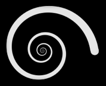

Door het herhaaldelijk combineren van rotaties en herschalingen kan men fascinerende spiraalachtige figuren bekomen. Een gemakkelijke manier om zulke figuren te creëren wordt gedemonstreerd in het programma rechts.
Men begint met een willekeurige vierhoek met hoekpunten ABCD. Dan leg je tegen deze vierhoek een geroteerde en herschaalde kopie van zichzelf, met de eigenschap dat de zijde CD van de eerste vierhoek juist samenvalt met de zijde AB van de nieuwe, geroteerde en herschaalde, vierhoek. Dan neemt men opnieuw een kopie van de vierhoek die op dezelfde manier tegen de tweede vierhoek wordt gelegd. Dit proces wordt telkens opnieuw herhaald.
De visualisatie rechts demonstreert dit proces, beginnende met een willekeurige vierhoek waarvan de hoeken vrij bewogen kunnen worden.
|
 |